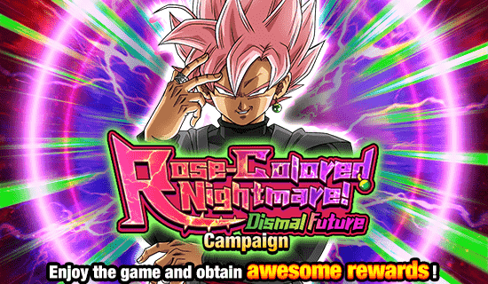
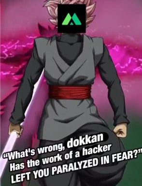

Eu juro q não sei como vão juntar as versões desse jeito.
Algumas pessoas tavam teorizando que aqui poderiam colocar o LR do tanabata adiantado no global pra facilitar na junção das versões mas não, é uma celebração filler estranha, bizarro.

Parece q alguém não gostou do goku black einKKKKKKKK
20 de fevereiro de 2024, 1 dia depois de revelarem o kit e animações do goku black, do nada o dokkan global muda de foto e de nome
Isso foi levemente hilário pelo timing em q aconteceu, logo depois de eles revelarem um card que aparentava ser bem decepcionante
Acho que a melhor parte foi que antes de recuperarem o acesso, a conta ainda fez questão de apagar os posts que tinham feito sobre o goku black, oq deixa tudo ainda mais perfeito

Isso foi lendário, obrigado a qualquer um q fez isso, omatsu provavelmente estava em shock (ou não pq odeiam o global)
Você chegou ao fim dessa página!
Obrigado por ler tudo, e fica a vontade pra ver outras